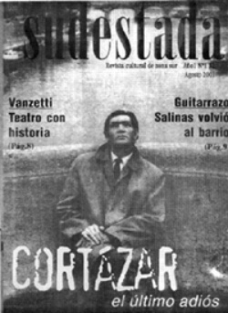

Buscar
Obdulio Varela
Como tantos otros futbolistas, el centrojás uruguayo Obdulio Varela atravesó los terrenos de un deporte que refleja las mayores miserias de la humanidad. El egoísmo, la traición y la falta de compromiso son las características de la mayoría de los dirigentes, jugadores y periodistas que se desarrollan en este medio, comentó Obdulio en contadas entrevistas después de haberse consagrado campeón mundial con la selección de su país.
Edición N° 1
Agosto 2001
Revista bimensual
Comprar edición impresaSumario
- La despedida del cronopio
- En la búsqueda
- Luis Salinas: Dicen que me fui del barrio...
- Soldi y un gran amor llamado Glew
- Obdulio Varela
- El rival olvidado de Satchmo
- La perla negra de Aramis Rigatuso
Compartir Articulo
JUGAR POR JUGAR
Tras abandonar la escuela por necesidad, se dedicó a vender libros y a lustrar zapatos. En uno de esos días donde el azar marca un quiebre en las vidas de las personas, uno de los doce hermanos de Obdulio lo invitó a jugar al fútbol en un equipo de segunda división y, desde entonces, escaló hasta convertirse en un símbolo de Peñarol y de la selección uruguaya.
"Yo no volvería a acercarme a una cancha ni aunque me ofrecieran millones".
Esta frase es la sensación que le quedó a Obdulio luego de haber sido engañado por dirigentes y maltratado por periodistas de turno que se meten en la vida privada de los demás sin ningún tipo de restricción. "Estas son leyes que se aprenden en la calle y, desde chico, tuve que elegir entre vivir dignamente-como lo hice-o largarme a cualquier cosa, como hacen algunos que no les queda otra chance".
Reflexiones como estas no es común escuchar hoy en día, y menos de los futbolistas que quedan ciegos ante las cifras millonarias que pasan ante sus ojos como una constante amenaza de perder su orgullo y someterse al poder del comprador. En ese momento, los jugadores dejan de ser personas para convertirse en mercancía de los empresarios del fútbol.
UNA SIESTA NECESARIA
La final del campeonato mundial de fútbol del 50 tuvo la suerte de tenerlo dentro de la cancha. Los brasileros, dueños de casa y rivales de los uruguayos, tenían preparado el festejo de las más de cien mil almas que asistieron al Maracaná. En los primeros minutos del segundo tiempo, Brasil convirtió el gol que presagiaba una derrota aplastante y Obdulio, como esos héroes que se manejan al margen del éxito, tomó la pelota y se dirigió a la mitad del campo tardando los minutos necesarios para que el público quede en silencio.
A partir de ese momento, los uruguayos, comandados por su gran capitán, apabullaron a Brasil y ganaron el partido.
La siesta necesaria que necesitó "el negro jefe" antes de jugar la final, le permitió tener la serenidad para convertirse en el comandante del equipo y no desesperarse ante la desventaja. La Asociación uruguaya se quedó con las medallas de oro y entregó a los futbolistas las de plata. "Lo único que logramos fue darle lustre a los dirigentes. Si tuviera que jugar la final de nuevo, me hago un gol en contra", aseguró el uruguayo mientras recordaba la tristeza que invadió Río en la misma noche en la que tuvo que tomar una cerveza fiada porque no había cobrado ni un centavo.
Anécdotas
Cuando jugaba en el club de segunda división fue vendido "como una bolsa de papas" a Wanderers, por 200 pesos, sin haberse enterado. A partir de ese momento, las relaciones con los dirigentes siempre fueron una pesadilla.
La rebeldía de Obdulio ante los periodistas, lo llevó a no posar para la foto del equipo. Tuvo serios inconvenientes con sus compañeros, hasta que le preguntó a un dirigente si lo habían contratado para jugar al fútbol o para ser modelo. De ahí en más, nunca lo molestaron.
Los festejos del campeonato logrado en el 50 fueron organizados en forma paralela por él y los jugadores de la Asociación de Fútbol Uruguayo, en muestra de desprecio y repudio ante sus dirigentes.
Obdulio ya no está entre nosotros, pero siempre se lo recordará como aquél jugador que jugaba al fútbol como vivía, con principios y actitudes que no se deben alterar ante la adversidad.
(La nota completa en la edición gráfica de Sudestada N°01)
Comentarios
Ignacio Portela
Articulos más vistos


LIBRERÍA SUDESTADA

Colección infantil

Distribuidora de Libros

Suscripción

Sudestada en URUGUAY

Otros articulos de esta edición
 Plástica
Plástica
Soldi y un gran amor llamado Glew
En la pequeña localidad de Glew se encuentra un tesoro artístico. Visitar este lugar es abstraerse a otra dimensión, bien ...
 Nota de tapa
Nota de tapa
La despedida del cronopio
Pocos meses antes de su muerte, en diciembre de 1983, Cortázar viajó a Buenos Aires para despedirse. En nuestro país ...
Luis Salinas: Dicen que me fui del barrio...
Nació en Monte Grande y dio su primer show en la zona sur a más de veinte años de su ...
 El galpón del viejo charly
El galpón del viejo charly
El rival olvidado de Satchmo
(Húmedo como libro viejo, olvidado quién sabe dónde, con ese olor tan característico; encerrado en sus paredes de madera, repleto ...
 Humor
Humor